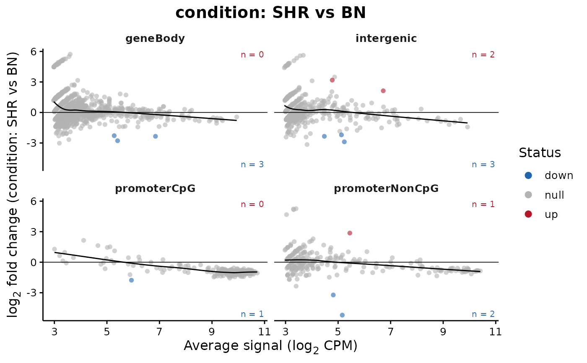
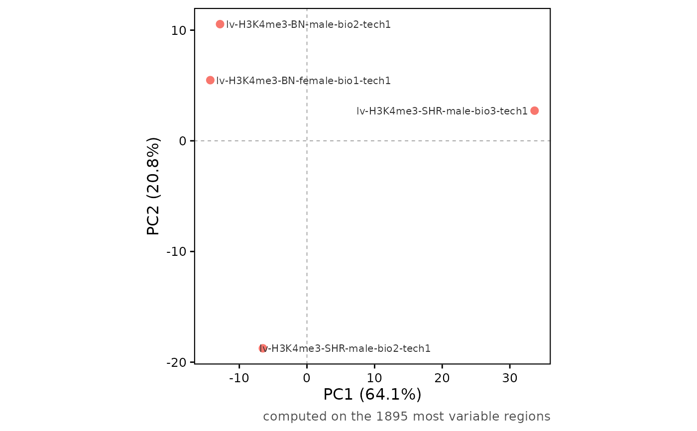

The objects of the package answer the generics other Bioconductor packages define for the same kind of data, so that code written for DESeq2 or edgeR objects reads them too. counts returns the raw count matrix, design the design matrix of a fit, plotMA the MA plot and plotPCA the principal component plot. They call the functions of the package of the same purpose, which are documented in full on their own pages.
Usage
# S4 method for class 'RegionSetDE.counts'
counts(object, ...)
# S4 method for class 'RegionSetDE.fit'
counts(object, ...)
# S4 method for class 'RegionSetDE.results'
counts(object, ...)
# S4 method for class 'RegionSetDE.setResults'
counts(object, ...)
# S4 method for class 'RegionSetDE.resultsList'
counts(object, ...)
# S4 method for class 'RegionSetDE.setResultsList'
counts(object, ...)
# S4 method for class 'RegionSetDE.fit'
design(object, ...)
# S4 method for class 'RegionSetDE.results'
plotMA(object, ...)
# S4 method for class 'RegionSetDE.resultsList'
plotMA(object, ...)
# S4 method for class 'RegionSetDE.counts'
plotMA(object, ...)
# S4 method for class 'RegionSetDE.counts'
plotPCA(object, ...)
# S4 method for class 'RegionSetDE.fit'
plotPCA(object, ...)
# S4 method for class 'RegionSetDE.results'
plotPCA(object, ...)
# S4 method for class 'RegionSetDE.resultsList'
plotPCA(object, ...)
# S4 method for class 'RegionSetDE.setResults'
plotPCA(object, ...)Arguments
- object
For
counts, aRegionSetDE.counts,RegionSetDE.fit,RegionSetDE.resultsorRegionSetDE.setResultsobject, or one of the two list classes holding several contrasts. Fordesign, aRegionSetDE.fitobject. ForplotMA, aRegionSetDE.resultsorRegionSetDE.resultsListobject, drawn byplotResultsMA, or a normalisedRegionSetDE.countsobject, drawn byplotSetMA. ForplotPCA, any object accepted byplotRegionPCA.- ...
For
plotMAandplotPCA, the arguments ofplotResultsMA,plotSetMAorplotRegionPCA, such assetorcontrast. Not used bycountsanddesign.
Value
counts returns a numeric matrix with one row per region, or per tile, and one column per sample, holding the raw counts. For a result they are the counts it carries, which needs the test to have been run with carryCounts = TRUE; countTable returns the normalised values or a table with the coordinates. design returns the matrix of the fixed effects, one row per sample, as designMatrix does. plotMA and plotPCA return a ggplot object.
Examples
fit <- loadExampleData("fit", verbose = FALSE)
dim(counts(fit))
#> [1] 1895 4
head(design(fit))
#> (Intercept) conditionSHR
#> lv-H3K4me3-BN-female-bio1-tech1 1 0
#> lv-H3K4me3-BN-male-bio2-tech1 1 0
#> lv-H3K4me3-SHR-male-bio2-tech1 1 1
#> lv-H3K4me3-SHR-male-bio3-tech1 1 1
results <- testRegions(fit, contrast = c("condition", "SHR", "BN"), verbose = FALSE)
plotMA(results)

plotPCA(fit)
